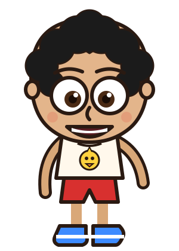

Chá revelação · Nanda & Kaio · estudo visual, versão 2"Pôster de locadora, visto numa TV de tubo"
Paleta
Noite#0b0820
Roxo#4a1d7a
Magenta neon#ff3d9a
Laranja pôr do sol#ff7a2e
Amarelo#ffd23f
Verde Matrix#39ff6a
Chuvisco da TV#cfcdc5
Lousa#1c2823
Fita crepe#f3d66b
Papel#f6efdd
Menino#3d8bff
Menina#ff4fa3
Tipografia
Pôster · Bungee
(título, KAIO)CHÁ REVELAÇÃO
(título, KAIO)CHÁ REVELAÇÃO
Derretida · Shrikhand
(NANDA)Nanda
(NANDA)Nanda
Máquina de escrever · Special Elite
(etiquetas, textos)Qual é o resultado?
(etiquetas, textos)Qual é o resultado?
Giz · Permanent Marker
(lousa do jogo)vez da Nanda · quase!
(lousa do jogo)vez da Nanda · quase!
Videocassete · VT323
Fliperama · Press Start 2P▶ PLAY SP 0:00:03 ROUND 1
Fliperama · Press Start 2P▶ PLAY SP 0:00:03 ROUND 1
Personagens: Kaio e Nanda crianças (a partir das fotos)


Objetos dos anos 90 (tudo em SVG, desenhado aqui)
Texturas
chuvisco
lousa
pôr do sol
scanlines